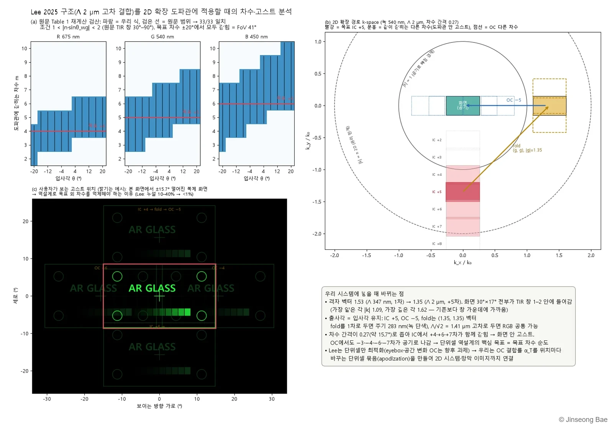
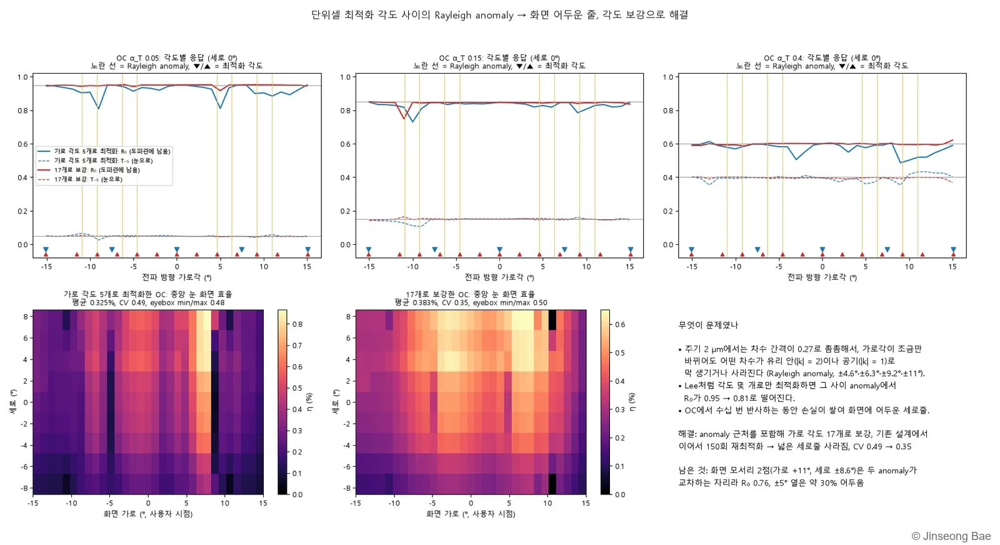
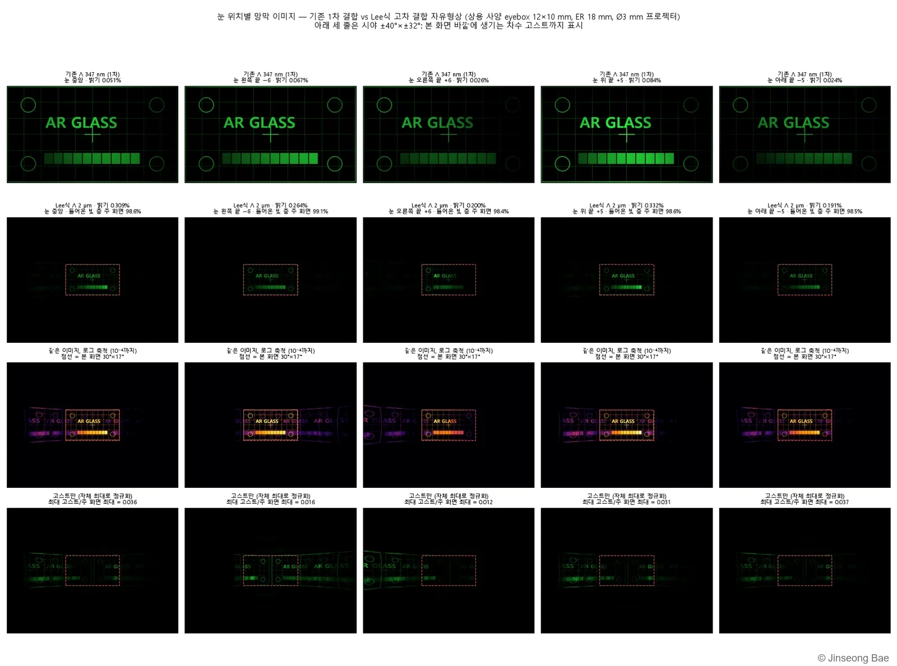
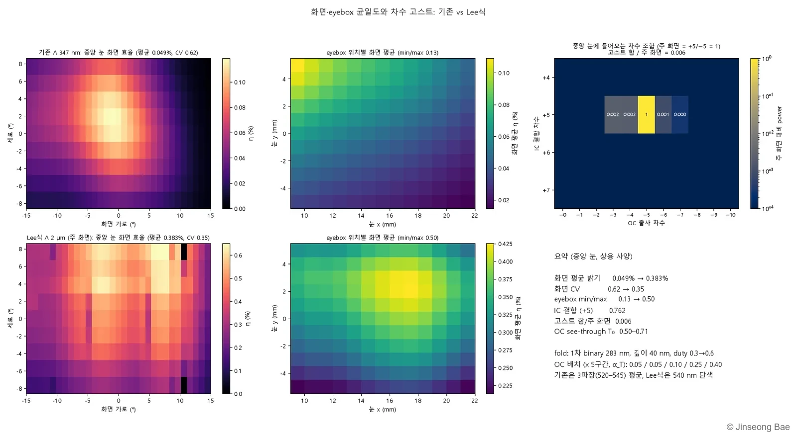

Problem and motivation
A diffractive-waveguide AR glass couples light from a microdisplay into a glass plate through an in-coupler grating, carries it by total internal reflection, and extracts it in front of the eye through an out-coupler. Even when the unit-cell efficiency is high, the image the eye sees degrades if the efficiency is uneven across field angles or if unwanted orders leak out as ghosts.
The starting point is a paper published by the same lab: S. Lee, B. Lee, H. Chung, Nanophotonics 14(27), 5555 (2025). It showed unit-cell optimization of a freeform coupler that couples into a high order (+5th) at a 2 µm period, and left system-level questions such as the eyebox and the retinal image as future work. Here I first reproduced the original conditions and then carried the work through to that system level myself.
Simulation setup
Unit cell (RCWA)
| Solver | fmmax (JAX), FFT formulation, 1D expansion M = 20 (41 orders), float64 |
|---|---|
| Structure | Period 2.0 µm, height 0.8 µm, x–z freeform of 40 layers × 100 pixels (20 nm) |
| Materials | TiO₂ n 2.4 (assumed) / glass waveguide n 2.0, thickness 0.5 mm |
| Wavelength · polarization | 540 nm monochromatic, average of two polarizations (unpolarized) |
| Field of view | Screen 30° × 17°. In-coupler 5 × 5 = 25 angles, out-coupler 17 × 3 = 51 angles |
| Objective | IC: drive +5th-order transmission to 1 and the +5th-order fraction among guided orders to 1. OC: drive outcoupled T₅ to the target α_T, zeroth-order reflection R₀ to 1 − α_T, and the see-through zeroth-order fraction to 1 |
System (beam tracing)
| Layout | IC → fold (7 × 16 mm) → OC (22 × 16 mm, 5 zones), eyebox 12 × 10 mm, eye relief 18 mm, pupil Ø 3 mm |
|---|---|
| Model | Guided paths are traced by dynamic programming on grid points. IC orders 4–7 and all outcoupled orders are counted, so ghosts are included. Incoherent, unpolarized |
| Retinal image | Source image × per-angle transfer efficiency (PSF and aberrations not included) |

Method
- Reproduce the original conditionsI matched the period, orders, objective and filter to the paper, and recomputed the k-space conditions in its Table 1; all 33 agree.
- In-coupler inverse designAdam (learning rate 0.03), conic filter with a 50 nm minimum feature size, tanh projection with β continued from 1 → 64. 450 iterations, about 2.4 hours (CPU).
- 5 out-couplers450 iterations for each extraction ratio α_T = 0.05/0.10/0.15/0.25/0.40. I then increased the angle set to 51 and re-optimized for 150 iterations.
- Layout searchI built a per-angle efficiency lookup table (LUT), then searched the 5-zone OC layout and the fold depth and duty alternately, twice.
- System simulationI computed the screen brightness at each eye position, eyebox uniformity, ghosts and retinal images.
Unit-cell results

| in-coupler | Mean +5th-order T 0.753 (min 0.674, max 0.815), +5th-order fraction among guided orders 0.994. Original paper: TE about 60 % |
|---|---|
| out-coupler | Targets 0.05/0.10/0.15/0.25/0.40 → 0.047/0.099/0.150/0.247/0.397, leakage into other orders about 0.1 % |
| See-through zeroth order | 1.000 by the paper's metric (zeroth-order fraction); absolute transmission T₀ is 0.50–0.71 |


The vertical-stripe problem — Rayleigh anomalies hidden between angles
At first I optimized the out-coupler at only 5 horizontal angles. The unit-cell metrics were good, but vertical stripes appeared in the retinal image. With a 2 µm period the order spacing is a dense 0.27, so between the optimized angles (±4.6°, ±6.3°, ±9.2°, ±11°) Rayleigh anomalies occur, where new orders open and close. At those angles the zeroth-order reflection R₀ dropped from 0.95 to 0.81, which darkened one column of the screen.


Re-optimizing with 17 horizontal × 3 vertical = 51 angles, so that the neighborhood of the anomalies is covered, improved the screen CV from 0.49 to 0.35 and the eyebox min/max from 0.48 to 0.50. The problem is not fully removed: two corner points (horizontal +11°, vertical ±8.6°) remain at R₀ 0.76, and the ±5° columns remain about 30 % darker.



System results


| Metric (center eye) | Earlier Λ 347 nm first-order → 5-angle OC → 51-angle OC |
|---|---|
| Mean screen brightness | 0.049 % → 0.325 % → 0.383 % |
| Screen CV | 0.62 → 0.49 → 0.35 |
| eyebox min/max | 0.13 → 0.48 → 0.50 |
| Ghost / main image | — → 0.018 → 0.006 |
The earlier first-order design values are a 3-wavelength average, while this design is 540 nm monochromatic, so direct comparison needs care. Using α_T 0.15 in every zone gives brightness 0.225 %, CV 0.74 and min/max 0.09, so most of the uniformity comes from the per-zone extraction-ratio layout.
Validation
- Fourier order convergence: maximum difference of M 30 and 40 relative to M 20 is IC 0.0014, OC 0.003.
- RCWA vs Meep 2D: in-plane incidence, TE and TM, Bloch-periodic, resolution 100 px/µm. IC at normal incidence: TE 0.892 vs 0.901 (0.897 at resolution 200), TM 0.727 vs 0.729. The largest difference is about 0.03, for TE at the edge angle of OC α_T 0.40. Energy sum 0.987–1.008.
The Meep cross-check covers only a few representative cases, and resolution 200 was run for one case only.
Limitations and non-claims
Claims
- A Λ 2 µm high-order coupling coupler was redesigned by differentiating RCWA and connected through to the system image
- The cause of the vertical stripes was identified (sparse angle sampling lets anomalies produce stripes in the image), and the stripes were substantially reduced
Non-claims
- RGB color — only green, monochromatic, was computed
- PSF·MTF, interference, second-order ghosts inside the waveguide — not in the model
- TiO₂ n 2.4 and height 0.8 µm are assumed values; no tolerance analysis, fabrication or measurement was done
Code layout
rcwa/lee_cell.py,rcwa/lee_opt.py— unit-cell model and inverse design (--part ic|oc,--dense)rcwa/lut_lee.py— per-angle efficiency tablercwa/system_sim_lee.py— fold and OC layout search, full system simulationmeep_t1/lee_xcheck.py— Meep 2D cross-checkfigs/make_lee_*.py— figures
All computations ran on the WSL CPU of a personal PC. Work done on 27 October 2026.